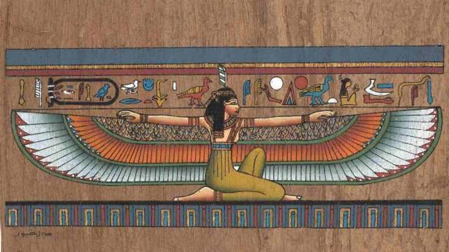

تقرير صحفى يكشف أهم قوانين مكافحه العنف ضد المرأه في مصر
مع التاريخ المصري العريق والذي تمتد جذوره في التاريخ ليحكي اهم حضارة واحد ارقى حضارات الأرض عبر العصور تقف مصر دائمه في طليعه كل تقدم وحصوصا فيما يختص بالدفاع عن المراة عبر العصور والازمنه حتى وقتنا الحديث والتقرير التالي يعرض نظره عن تاريخ القوانين التي مرت على مصرنا الحبيبة عبر الازمان
(الفراعنه القدماء) كانت عقوبه جريما الزنا تصل الى الإعدام حرقآ وقطع العضو التناسلى وذلك استنادا الى نقوش أنى ،وبرديه ليييد كما كان الشروع في (المراوده) او (التحرش ) يواجه أحيانا بنفس العقوبه .ووفقا للباحث الأثرى مجدى شاكر فأن هناك برديه تعود لسنه (1200) قبل الميلاد تكشف واقعه تحرش بطيبه عاصمه مصر

دور الاسلام في صون المراءة
( العرب ما قبل الأسلام ) رفضه العرب وكانت عقوبه المتحرش الطرد او النفى بحسب ما جاء في كتاب (الأغانى لأبى فرج الأصفهانى )..
بدايه الأسلام في أوائل القرن السادس الميلادى وسع النبى محمد (صلى الله عليه وسلم) حقوق المرأه لتشمل حق الميراث والزواج والنفقه
كما نهى النبى عن الأساءه للنساء وامر بمعاملتهن بالحسنى والرحمه فقال في حجه الوداع .(أستوصوا بالنساء خيرا ,فاْنهن عندكم عوان لا يملكن لأنفسهن شيئا ,وانكم انما أخذتموهن بأمانه الله واستحللتم فروجهن بكلمات الله ,فاعقلوا أيها الناس قولى )
في العصر الحديث
قانون رقم 95 لسنه 2003 بتعديل قانون العقوبات المصرى رقم 58 لسنه 1973 بتغليظ عقوبات الأعتداء الجنسي على المرأه المصريه -
صدر قانون رقم 154 لسنه 2004 المعدل لقانون الجنسيه رقم 26 لسنه 1975 الذى نص على حق الأبناء للأم المصريه في الجنسيه المصريه -
رقم 10 لسنه 2004 لحقوق المرأه يهدف لحمايتها من كل انوا التميز داخل مصر -
وقد عرفت الأمم المتحده خلال إعلان القضاء على العنف ضد المرأه المصريه عام 1993 -
المرسوم بقانون رقم 11 لسنه 2011 بتعديل قاون العقوبات المصرى لعام 1973 بتغليظ عقوبه الاعتداء على المرأه المصريه ووضع عقوبه التحرش -
قانون مكافحه زواج القاصرات لعام 2014 -
مشروع قانون مكافحه العنف ضد المرأه الذى أعده المجلس القومى يتضمن الحرمان من الميراث وتزويج الأنثى بغير إرادتها وجرائم الأعتداء الجنسى -
قانون رقم 78 لسنه 5 201 بتعديل قانون العقوبات المصرى رقم 58 لسنه 1976 بتغليظ عقوبه ختان الاناث -
القانون رقم 50 لسنه 2015 بتعديل مواد التحرش الجنسى في قانون العقوبات -
قانون حمايه النساء وأفراد الاسره من العنف المنزلى رقم 293 لسنه 2016 -
مشروع قانون مكافحه العنف ضد المرأه الذى اعده المجلس القومى يتضمن الحرمان من الميراث وتزويج الأنثى بغير أرادتها -
القانون رقم 126 لسنه 2019 تم اعتماد هذا القانون لتعزيز حقوق المراه ضد العنف -
قانون رقم 10 لعام 2021 تم تعديله احكام قانون العقوبات لقضيه ختان الاناث -
تجرم الماده ٢٦٧ من قانرن العقوبات الأغتصاب وتنص على ان العقوبه القصوى هي المؤبد-
تجرم الماده ٢٦٨ من قانرن العقوبات الأعتداء الجنسى وتحدد عقوبه السجن لتصل الى ١٥عام -
تعاقب مواد ٢٦٠،٢٦٣ ،٢٦٤ اسقاط الحوامل بالحبس والسجن المشدد -
وفي اطار ذلك توجد الكثير من مشروعات القوانين والقوانين التي تناولت مكافحة العنف ضد المراءة والتي لخصناها في الفيديو التالي
الصادر حديثآ للمرأة
كل القوانين الحديثة هي قوانين مطبقة ولا يوجد أية قوانين جديدة الي الان…تم الاستعانه برأى الأستاذ المحامى بالنقض (أشرف شملى عبد الغنى )فيما يخص القوانين المتعلقه بحقوق المرأه التى تكفلها لها الدوله واوضح ان العام الماضى شهد عده قضايا ضد المرأه سواء من الازواج او الاقارب وان القوانين الجديده وضعت حدود صارمه لكل اشكال العنف ضد المراه سواء الجسدى او النفسى ولم تقصر المعاقبه للجانى فقط على الغرامه كما كان الحال فى الماضى لكن اصبح العقاب الحبس من شهر ل ٣سنوات كحد اقصى فى دائره العنف ضد المرأه واشار ان المرأه كيان منذ ١٤٠٠عام عند ظهور الاسلام لها حقوق وعليها واجبات وليس فقط شئ مستحدث فى الاعوام الماضيه .
(قوانين جارى العمل على دراستها )
١ استمرار العمل على ملف التشريعات الألزمه الحاميه المرأه من كافه أشكال العنف ووحدات حاميه واستقبال ضحايا العنف
٢ اقتراح سياسات لمخاطبه التحرش والعنف في أماكن العمل ومدونات السلوك
٣ مفترح إضافه تعديلات بقانون حمايه الطفل ودراسه جوانب أخرى معلقه بحمايه المرأه
٤ استكمال العمل على ملف مشروع قانون منع الزواج المبكر وزواج الأطفال والقسرى
اراء الشارع
في اطار التعرف على اراء الشارع فيما يخص رؤيتهم لاحوال القوانين الخاصه بمكافحة العنف ضد المراة وهل الاوضاع الان افضل للمراة عن زي قبل اما ان الوضع كما هو حيث سالنا بعض طلاب جامعة بنها في هذا الاطار وجاءت اجابتهم في الفيديو التالي